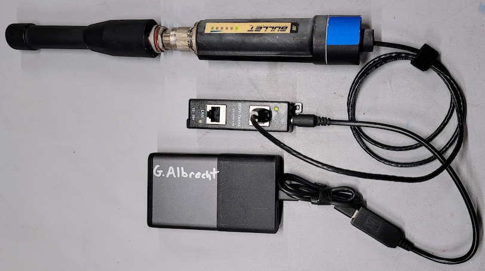
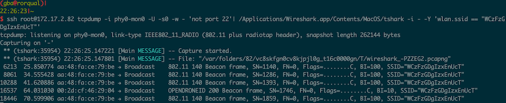

OpenWRT Remote ID Receiver
This guide describes the process of creating a FAA Remote ID broadcast receiver using commercial off the shelf components, and open-source software. The receiver captures & analyzes Remote ID broadcasts from compliant UAV, UAS, Drones & other unmanned and uncrewed aircraft. Captured Remote ID broadcasts contain pertinant telemetry about the airborne object, including position, operator location, speed, heading & more. Remote ID data is viewed within the Wireshark packet capture software.
There are many RF waveforms for Remote ID. This receiver uses the 2.4 GHz WiFi Remote ID waveform - additional waveforms and frequencies are possible with further development.
Prerequisites
- An OpenWRT compatible device with a WiFi chipset that supports Monitor Mode.
- A computer with Wireshark software.
- A LAN IP network connecting the Wireshark computer & the OpenWRT device.
Tested devices: * Ubiquiti Rocket M2 2.4 GHz Radio (AR9342) * Ubiquiti Bullet M2 2.4 GHz Radio (AR9283)
Compatible (untested!) devices
Steps
OpenWRT device
- Install OpenWRT.
-
Install tcpdump OPKG (via Internet access or manual copy):
opkg update opkg install tcpdump -
Enable monitor mode:
uci set wireless.@wifi-device[0].disabled=0 uci commit iw phy phy0 interface add mon0 type monitor; ifconfig mon0 up
Wireshark computer
- Install Wireshark.
- Install the Wireshark Remote ID Dissector.
- Ensure network connectivity to OpenWRT device:
ping 192.168.0.1 - Run tcpdump on the OpenWRT host and pipe output to Wireshark, using ssh:
ssh -o StrictHostKeyChecking=no root@192.168.0.1 tcpdump -i mon0 -U -s0 -w - 'not port 22'|\ /Applications/Wireshark.app/Contents/MacOS/Wireshark -k -i -
- Change
192.168.0.1to the IP address of your OpenWRT device.- Change
/Applications/Wireshark.app/Contents/MacOS/Wiresharkto the path to the Wireshark executable on your computer.
Results
Within Wireshark you should begin to see OPENDRONEID packets in the Protocol column. You can filter for these packets by using the filter: opendroneid

Clicking through to a Remote ID packet shows details:
Capturing Remote ID with thskar, Wireshark's command-line tool:

Capturing Remote ID with tshark and outputing data as JSON:
Analyzing Remote ID data with Node-RED:
Test Code Blocks
taco tab colon sh
taco